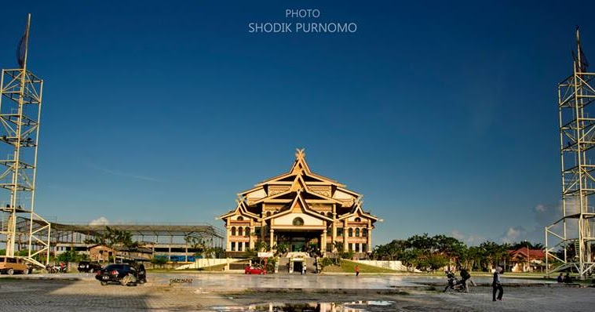

RIAU

Riau adalah sebuah provinsi di Indonesia yang terletak di bagian tengah pantai timur
pulau
Sumatra. Wilayah pesisirnya berbatasan dengan Selat Malaka. Hingga tahun 2004, provinsi ini juga meliputi Kepulauan
Riau, sekelompok besar pulau-pulau kecil (pulau-pulau utamanya antara lain Pulau Batam dan Pulau Bintan) yang
terletak di sebelah Timur Sumatra dan sebelah Selatan Singapura. Kepulauan ini dimekarkan menjadi provinsi
tersendiri pada Juli 2004. Ibu kota dan kota terbesar Riau adalah Pekanbaru, dan kota besar lainnya adalah kota
Dumai
Sejarah
Geografis
Wisata
Sejarah
Riau merupakan penggabungan dari kerajaan Melayu yang pernah berjaya di wilayah ini, yaitu Kerajaan Indragiri
(1658-1838), Kerajaan Siak Sri Indrapura (1723-1858), Kerajaan Pelalawan (1530-1879), Kerajaan Riau-Lingga
(1824-1913) dan beberapa kerajaan kecil lainnya, seperti Tambusai, Rantau Binuang Sakti, Rambah, Kampar dan Kandis.
Pembangunan Provinsi Riau telah disusun melalui Undang-undang darurat No. 19 tahun 1957 yang kemudian disahkan
sebagai Undang-undang No.61 tahun 1958.Provinsi Riau dibangun cukup lama dengan usaha yang keras dalam kurun waktu 6
tahun 17 November 1952 s / d 5 Maret 1958).
Geografis
Provinsi Riau terdiri dari daerah daratan dan perairan, dengan luas lebih kurang 8.915.016 Ha (89.150 Km2),
Keberadaannya membentang dari lereng Bukit Barisan sampai dengan Selat Malaka terletak antara 01° 05’ 00” Lintang
Selatan - 02° 25’ 00” Lintang Utara atau antara 100° 00’ 00” - 105° 05’ 00” Bujur Timur. Disamping itu sesuai
Undang-undang Nomor 32 Tahun 2004 terdapat wilayah lautan sejauh 12mil dari garis pantai. Di daratan terdapat 15
sungai, diantaranya ada 4 sungai besar yang mempunyai arti penting sebagai sarana perhubungan seperti
Sungai Siak (300 Km) dengan kedalaman 8 -12 m, Sungai Rokan (400 Km) dengan kedalaman 6-8 m, Sungai Kampar (400 Km)
dengan kedalaman lebih kurang 6 m dan Sungai Indragiri (500 Km) dengan kedalaman 6-8 m. Ke 4 sungai yang membelah
dari pegunungan daratan tinggi Bukit Barisan Bermuara di Selat Malaka dan Laut Cina Selatan itu dipengaruhi pasang
surut laut.
Wisata
Kalau sudah membahas soal liburan, Riau memiliki beragam destinasi wisata untuk dikunjungi ketika hari libur
lebaran. Keindahan wisata di bumi Melayu Lancang Kuning itu meliputi wisata budaya, wisata alam, wisata sejarah,
wisata bahari, dan wisata buatan.
Tidak dimungkiri, jika banyak wisatawan mancanegara yang berkunjung ke Riau banyak menikmati keindahanan destinasi
di daerah tersebut.
Tempat wisata Riau :
- Kota Siak

Siak memiliki destinasi wisata alam, sejarah, dan budaya. Wisatawan mancanegara dan nusantara sering menyambangi
daerah ini. Sejumlah destinasi wisata yang menarik untuk didatangi di kota ini di antaranya adalah, Istana Siak.
Istana Siak merupakan bukti sejarah kebesaran kerajaan Melayu Islam yang terbesar di Riau. Di Istana ini,
wisatawan dapat melihat peninggalan kerajaan berupa kompleks Istana Kerajaan Siak.
- Asia Heritage

Asia Heritage menyajikan sejumlah wahana, seperti The Great Wall, Little Kyoto, Jeju Village, Floating Market,
Chinatown, Rainbow Slide, dan Masjid Chengho. Lokasinya berada tidak jauh dari pusat kota. Jaraknya hanya sekitar
14 kilometer dari Kota Pekanbaru, dengan waktu tempuh sekitar 25 menit berkendara.
Di sini wisatawan juga bisa menyewa pakaian tradisional dari sejumlah negara ASEAN, seperti Kimono, pakaian
tradisional dari Jepang, Hanbok dari Korea, dan lain-lain.
- Perpustakaan Soeman H.S

Layaknya sebuah pusat perbelanjaan modern, perpustakaan Soeman H.S dapat dikatakan sebagai perpustakaan termegah
di Pekanbaru.
Keindahan dari perpustakaan ini tidak hanya dinilai dari bentuk bangunan gedung yang seperti buku sedang dibuka,
namun juga karena fasilitas yang ditawarkan lengkap, yaitu WiFi, buku-buku edisi baru, komputer, ruangan ber-AC,
dan lain-lain. Tak heran tempat ini kerap dijadikan tujuan wisata kota Pekanbaru.
Info lebih lanjut tentang Provinsi Riau